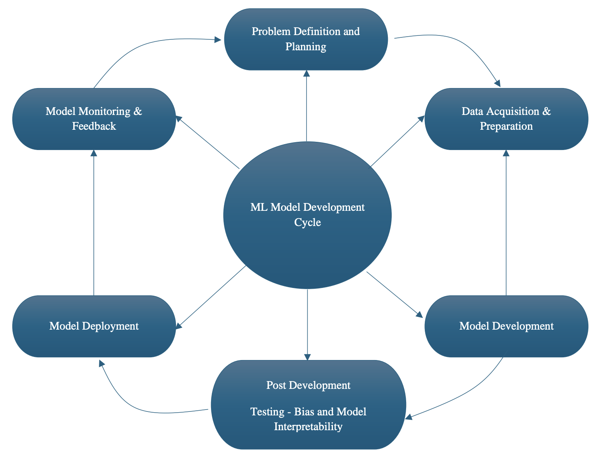
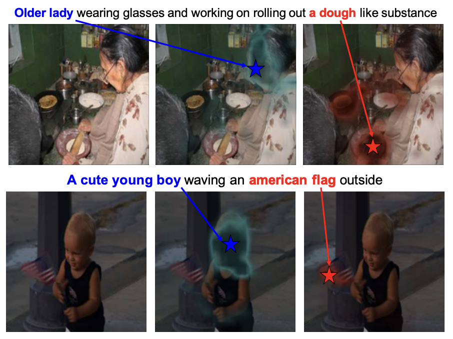
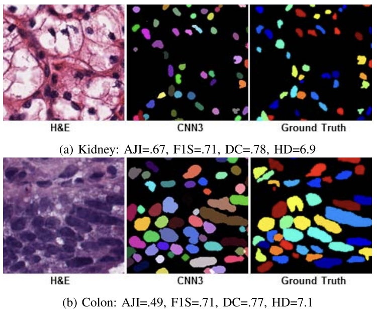

I am a Machine Learning Tech Lead at Adobe with a strong foundation in transitioning machine learning research into production. I lead Adobe's Generative AI initiatives for Acrobat, including multi-document Q&A, Retrieval-Augmented Generation (RAG) pipelines, LLM evaluation, and user intent detection.
During my time at Adobe, I have delivered impactful AI-powered products, such as the AI Assistant for Acrobat and Adobe's Liquid Mode, both of which have been recognized among Time Magazine's Top Innovations in 2024 and 2023, respectively. My specialization spans Generative AI, Computer Vision, and Natural Language Processing (NLP)
In the research community, my work has garnered over 1,000 citations, reflecting the significance of my contributions. I also actively review for prestigious venues and leading journals.
Beyond my technical endavors, I am deeply committed to nurturing the next generation of AI professionals. I share my expertise through international conferences, mentoring students and early-career professionals, and fostering a culture of knowledge sharing.
Always up for a coffee chat! To get in touch, shoot me an email at surabhi9b [at] gmail [dot] com.
Updates
Latest
- [Mar '25] Upcoming : Speaking at Orielly's AI Superstream on Retrieval-Augmented Generation (RAG) in Production
- [Nov '24] Paper titled Challenges, Solutions, and Best Practices in Post-Deployment Monitoring of Machine Learning Models published in International Journal of Computer Trends and Technology
- [Nov '24] Quoted in an article on From Declarative to Iterative: How Software Development is Evolving by Information Week.
- [Oct '24] Received the 2024 TIME Magazine Best Invention Award for AI Assistant in Adobe Acrobat
- [Oct '24] Live TV interview with Ticker News on Responsible Development of AI Applications
- [Oct '24] Serving as a reviewer at NeurIPS Math AI workshop, 2024
- [Nov '24] Quoted in an article on The Future of LLM’s by Usetech.
- [Nov '24] Nominated for Venturebeat's Women in AI Awards 2024
- [Jun '24] Promoted to Staff Machine Learning Engineer at Adobe
- [Mar '24] Quoted in an article on Can AI-Generated Misinformation Be Stopped? by Techopedia.
- [Oct '23]: Received the 2023 TIME Magazine Best Invention Award for Liquid Mode in Adobe Acrobat
Previously
- [Dec '22] Serving as a reviewer for Engineering Applications of Artificial Intelligence (Elsevier Journal)
- [Nov '22] Serving as a reviewer for AISTATS Conference 2023
- [Sep '22] Serving as a reviewer for NeurIPS Table Representation Learning Workshop, 2022
- [May '22]: Organized a Workshop on Building a Powerful Resume & SOP at IIIT Delhi
- [Apr '22] Serving as a reviewer for ACM MM Conference, 2022
- [Feb '22]: Speaking at REWORK Enterprise AI Summit on You Deployed Your Machine Learning Model, What Could Possibly Go Wrong?
- [Jan '22]: Published an article on A Recipe For Taking Better Interviews
- [Jan '22]: Promoted to Senior Machine Learning Engineer at Adobe
- [Aug '21]: Panel Discussion - Computer Vision In Industry: Use Cases, Challenges, & Roadmap at AI4 Conference
- [Mar '21]: Speaking at the Codemotion Conference (English & Italian editions) on Active few shot learning: The future of training Machine Learning models
- [Feb '19]: Joined Adobe full time as a Machine Learning Engineer!
- [Dec '19]: Graduated from Columbia University with a Master's degree in Computer Science
- [Feb '19]: Paper titled Multi-Level Multimodal Common Semantic Space for Image-Phrase Grounding accepted at CVPR 2019
- [Nov '18]: Paper titled Multimodal Social Media Analysis for Gang Violence Prevention accepted at ICWSM 2019
- [Sep '18]: Among 50 women in CS all over the world to be awarded Facebook GHC Scholarship
- [May-Aug 2018]: Joined Adobe as a Machine Learning intern for the summer! Building Object detection models for PDF Structure Extraction, forming the foundation for Adobe's Liquid Mode
- [Sep '17]: Among 50 women in CS all over the world to be awarded Facebook GHC Scholarship
- [Sep '17]: Joined Columbia University, NY, to pursue MS in CS with a specialization in Machine Learning
- [Jul '17]: Paper titled A Dataset and a Technique for Generalized Nuclear Segmentation for Computational Pathology published in IEEE TMI Journal
- [Jul '16]: Joined PayPal as a Software Engineer
Writing
-

Challenges, Solutions, and Best Practices in Post-Deployment Monitoring of Machine Learning Models Surabhi Bhargava, Shubham Singhal
Research Paper
International Journal of Computer Trends and Technology, Volume 72 Issue 11, 63-71, November 2024 -
Multimodal social media analysis for gang violence prevention Philipp Blandfort, Desmond U Patton, William R Frey, Svebor Karaman, Surabhi Bhargava, Fei-Tzin Lee, Siddharth Varia, Chris Kedzie, Michael B Gaskell, Rossano Schifanella, Kathleen McKeown, Shih-Fu Chang
Research Paper
Thirteenth International AAAI Conference on Web and Social Media (ICWSM-19), June 2019 -

Multi-level multimodal common semantic space for image-phrase grounding Hassan Akbari, Svebor Karaman, Surabhi Bhargava, Brian Chen, Carl Vondrick, Shih-Fu Chang
Research Paper
IEEE/CVF conference on computer vision and pattern recognition (CVPR), June 2019 -

A dataset and a technique for generalized nuclear segmentation for computational pathology Neeraj Kumar, Ruchika Verma, Sanuj Sharma, Surabhi Bhargava, Abhishek Vahadane, Amit Sethi
Research Paper
IEEE Transactions on Medical Imaging, Vol. 36, No. 7, July 2017